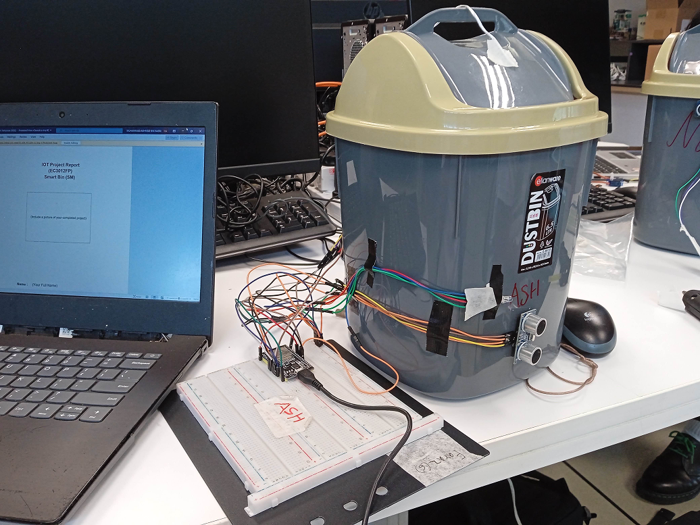

Muhd Ashridz / projects
Aspiring developer & media creator.

Smart Bin Project
This project is an automated Smart Bin designed to reduce contact with waste surfaces. Built using C++ and an Arduino Uno, the system integrates an HC-SR04 ultrasonic sensor to detect a user's hand within a 20cm range. Upon detection, a servo motor is triggered to open the lid instantly, allowing for a completely hands-free and sanitary experience.